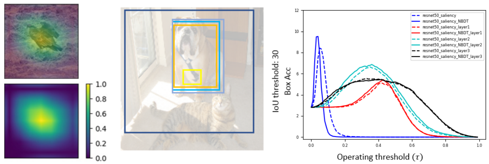

Erico Tjoa, Ph.D
AI/ML developer and researcher, project management, multilingual, scholar.
Email : ericotjoa@gmail.com
Google scholar: here
LinkedIn: here
Github: here
Nationality: Singaporean
Update always in progress . . . !
Disclaimer: this resume is likely more updated than the one I manually sent you.
Google scholar: here
LinkedIn: here
Github: here
Nationality: Singaporean
Update always in progress . . . !
Disclaimer: this resume is likely more updated than the one I manually sent you.
Skills
Programming: python, Java, C++ etc
Machine learning, deep learning: pytorch, scikit-learn etc
Web development
Languages
English
Japanese (JLPT N1, highest official qualification, 90.3%)
Bahasa Indonesia (native!)
Chinese (A Levels)
Welcome!
Infocomm Media Development Authority
July 2024 - Current
Manager
- Develop research strategies in the areas of AI and Trust Technologies, Cross-Domain Research that is aligned to Singapore's strategic interests. [Update in progress]
Stealth Mode
Jan 2021 - Current
Founder & Full Stack Software Engineer
- Web development & hosting, digital marketing, content curation services [IN PROGRESS]. Currently in the portfolio: Yorubi.com
- Independent website development e.g. on m5.large EC2 instance of AWS + gp3 EBS. Tech stack: python with flask, pymongo, MongoDB, SQL, Javascript, AJAX, CSS etc.
- Tech stack: python with flask, pymongo, MongoDB, SQL, Javascript, AJAX, CSS etc.
Previous Work Experience and Education
Stanford University
July 2023 - July 2024
Postdoctoral Scholar
- Machine learning on biomedical data modalities in translational settings.
- Involved in data analytics, literature survey and writing of comprehensive R01 grant proposal (~$2.5 million funding, 5 years).
- Program Committee AAAI Special Track on Safe and Robust AI.
 x Alibaba Group x NTU
x Alibaba Group x NTU
Jan 2019 - July 2023
Industrial PhD candidate
PhD candidate under Alibaba NTU Talent program with diverse experiences:- Project Management. Led, coached and trained teams of 5 to 12 software developers from product ideation to prototype demonstration in laboratory setting.
- AI/ML Research/Engineering. Improved group research index with 1000+ Google Scholar citations. Published on scientific journals like IEEE TNNLS, Neurocomputing etc. Research topics: computer vision, artificial intelligence, machine learning, healthcare, explainable AI. Also, peer-reviewed several journal papers.
 Agency for Science, Technology and Research (A*STAR)
Agency for Science, Technology and Research (A*STAR)
Jan 2018 - Jan 2019
Research Engineer.
System integration + computer vision: trained, deployed automated aircraft surface defect detection and merged it with the team’s existing traditional ML system into an installable product.
Nanyang Technological University
Aug 2014 - Aug 2018
BSc in Physics and Mathematics
Nanyang Technological University (SPMS).
- Lee Kuan Yew Gold Medal (top student, highest distinction), Shell Petroleum Gold Medal, Dean’s List
- CN Yang Scholar, Nanyang Scholarship holder
Tutor/Teaching Assistant
Teaching Assistant for Calculus MH1802 and Algorithm and Computing III MH2401, principal invigilator, invigilator.Professional certifications
- Machine Learning (Stanford, Coursera)
- Google Project Management - Professional Certificate (Coursera)
- SQL for Data Science, IBM (edX)
- The Ultimate Hands-On Hadoop: Tame your Big Data! Hadoop, MapReduce, Spark etc
Singapore Armed Forces (2012-13)
- Island defence. IPPT silver award.
Meridian Junior College (2011-12)
- Top overall student with 90/90 points + H3 Physics (NUS).
- Business club: manage sales during sports events.
Research
Here are some samples. For more, visit my google scholar.

[2] Evaluating Weakly Supervised Object Localization Methods Right? A Study on Heatmap-based XAI and Neural Backed Decision Tree
Choe et al have investigated several aspects of Weakly Supervised Object Localization (WSOL) with only image label. They addressed the ill-posed nature of the problem and showed that WSOL has not significantly improved beyond the baseline method class activation mapping (CAM). We report the results of similar experiments on ResNet50 with some crucial differences: (1) we perform WSOL using heatmap-based eXplanaible AI (XAI) methods (2) our model is not class agnostic since we are interested in the XAI aspect as well. Under similar protocol, we find that XAI methods perform WSOL with very sub-standard MaxBoxAcc scores. The experiment is then repeated for the same model trained with Neural Backed Decision Tree (NBDT) and we found that vanilla CAM yields significantly better WSOL performance after NBDT training.

[3] kaBEDONN: posthoc eXplainable Artificial Intelligence with Data Ordered Neural Network
Different approaches to eXplainable Artificial Intelligence (XAI) have been explored including (1) the systematic study of the effect of individual training data sample on the final model (2) posthoc attribution methods that assign importance values to the components of each data sample. Combining concepts from both approaches, we introduce kaBEDONN, a system of ordered dataset coupled with a posthoc and model-agnostic method for querying relevant training data samples. These relevant data are intended as the explanations for model predictions that are both user-friendly and easily adjustable by developers. Explanations can thus be finetuned and damage control can be performed with ease.

[4] Improving Deep Neural Network Classification Confidence using Heatmap-based eXplainable AI
This paper quantifies the quality of heatmap-based eXplainable AI methods w.r.t image classification problem. Here, a heatmap is considered desirable if it improves the probability of predicting the correct classes. Different XAI heatmap-based methods are empirically shown to improve classification confidence to different extents depending on the datasets, e.g. Saliency works best on ImageNet and Deconvolution on ChestX-Ray Pneumonia dataset. The novelty includes a new gap distribution that shows a stark difference between correct and wrong predictions. Finally, the generative augmentative explanation is introduced, a method to generate heatmaps maps capable of improving predictive confidence to a high level.

[5] Quantifying Explainability of Saliency Methods in Deep Neural Networks
One of my earlier papers. Here, I created synthetic datasets to test the quality of existing heatmap-based XAI methods.
[6] Self reward design with fine-grained interpretability
Solving reinforcement learning problems with maximum, fine-grained interpretability.
Extracurricular Activities
Software Development Projects Management, Mentoring
Oversaw their full project lifecycles (Agile etc) as lab instructors for:
1. Software Engineering CE2006
2. Advanced Software Engineering CZ3002
3. Software System Analysis and Design CZ3003
1. Software Engineering CE2006
2. Advanced Software Engineering CZ3002
3. Software System Analysis and Design CZ3003
Student teaching assistant
1. Calculus MH1802 and Algorithm
2. Computing III MH2401 (2017-18)
1. Calculus MH1802 and Algorithm
2. Computing III MH2401 (2017-18)
Other services
Miscellaneous services include.
- Principal invigilator, invigilator (2019).
- Volunteer. Pathlight School Committee (2010-2011) to conduct Workshops on Effective Learning for autistic students.
- Web Development. I also manage my own website complete with login, database feature and security (certbot). This website is managed from scratch, set up from DigitalOcean Droplet.
Research statement (Informal)
I'm currently happy to work on improving AI/ML models broadly in terms of safety, transparency, interpretability etc. What you will read below specifically refers to research works I did during my PhD.
Explainable Artificial Intelligence. My research revolves around the broad theme of explainability, interpretability and transparency in the application of machine learning/deep learning, often grouped under the umbrella of eXplainable Artificial Intelligence (XAI). The objective is to achieve fair, transparent, trustworthy and unbiased algorithms.
There's a story to each project.
Deep learning for medical AI. We started off with a research that focuses on automation in the pipeline of ischemic stroke diagnosis. Medical image analysis is performed using deep neural network, in particular the U-Net. Furthermore, we apply explainable AI methods to understand our results. Without going into details, I found that popular XAI methods have been rather lacking -some heatmaps they generated just didn't make sense!- and thus my study on interpretable AI began. It was a bumpy start to my medical AI research, but I have continued working on deep learning methods in the field. For example, in this paper, ResNet is finetuned for pneumonia classification. Given an X-Ray image, the algorithm quickly tells us if the patient suffers from pneumonia or not.
Research on the quality of XAI. Testing metrics. There have been many metrics to measure the success of XAI, including faithfulness and fidelity. Localization has also been used as a measure of heatmap quality, and one of my earliest projects aims to measure heatmap quality via straightforward accuracy of localization. The results are shown in this paper. We found that even when deep learning models perform very well in terms of classification, heatmaps generated with XAI methods from these models can still look random! In a similar vein, we tested the MaxBoxAcc metric introduced by Choe et al, and, surprise, surprise, we got some rather interesting results. We really hope that the research community doesn't blindly use heatmaps and claim that they "explain" something in a convenient, cherry-picking manner.
Extremity as novelty. The frustration with "working" XAI methods has led me to develop methods with extreme level of transparency. I wanted to demonstrate that it is possible to have meaningful parameters, not just senseless weights and parameter tuning, not just "bigger model is better." The following two papers, one on universal approximation and another on a reinforcement learning algorithm, are the products. I went as far as giving each neuron in a neural network model a meaning while retaining the properties of recently popular neural network models. There was also a fair attempt in which I used the general pattern theory (a very old math). It's not too fleshed out, but I personally think a more modern and less convoluted theory may help with the transparency and fairness of neural network.
Debugging. As an extension to my research on univeral approximation, I thought one might be able to improve transparency with ordered data. The idea is to know which training data are "influential" to the decision of an algorithm (this is a research topic in itself). Furthermore, by allowing simple adjustment of ordered data, we allow debugging and temporary fixes that help developers perform some quality control before properly tuning the main algorihtm. Thus is born the kaBEDONN.
My research has therefore been a series of well-motivated attempts at dealing with blackbox issues in ML/AI models. From my experience, "explanation" and "interpretability" might be ill-defined because some problems are heavily context dependent, so attempt to study XAI might be doomed from the start. But there's a lot more to be done, and the topic is both meaningful and exciting. Finally, throughout my PhD training, I've equipped myself with a general set of programming skills and more specialized skills in ML/AI.